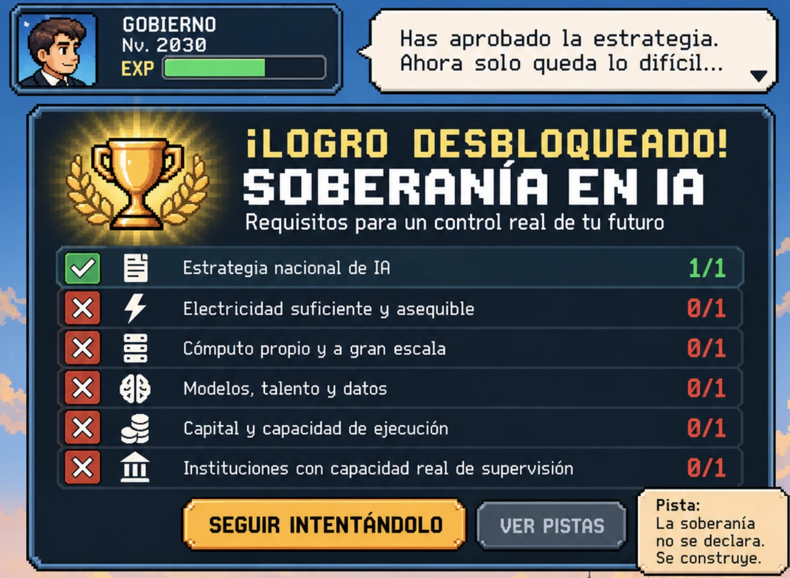

estrategIA #155 ·
El logro que aún no has desbloqueado
El contexto
La pantalla de videojuego muestra una estrategia aprobada y muchas capacidades pendientes. Resume el argumento del número: la soberanía en IA depende de energía, cómputo, talento e instituciones, además de una declaración de intenciones.
Publicado en: estrategIA #155 — Qué separa a los países que hablan de soberanía en IA de los que pueden ejercerla
Leer el texto de la imagen
GOBIERNO · Nv. 2030 · EXP Has aprobado la estrategia. Ahora solo queda lo difícil... ¡LOGRO DESBLOQUEADO! SOBERANÍA EN IA Requisitos para un control real de tu futuro Estrategia nacional de IA: 1/1 Electricidad suficiente y asequible: 0/1 Cómputo propio y a gran escala: 0/1 Modelos, talento y datos: 0/1 Capital y capacidad de ejecución: 0/1 Instituciones con capacidad real de supervisión: 0/1 SEGUIR INTENTÁNDOLO VER PISTAS Pista: La soberanía no se declara. Se construye.